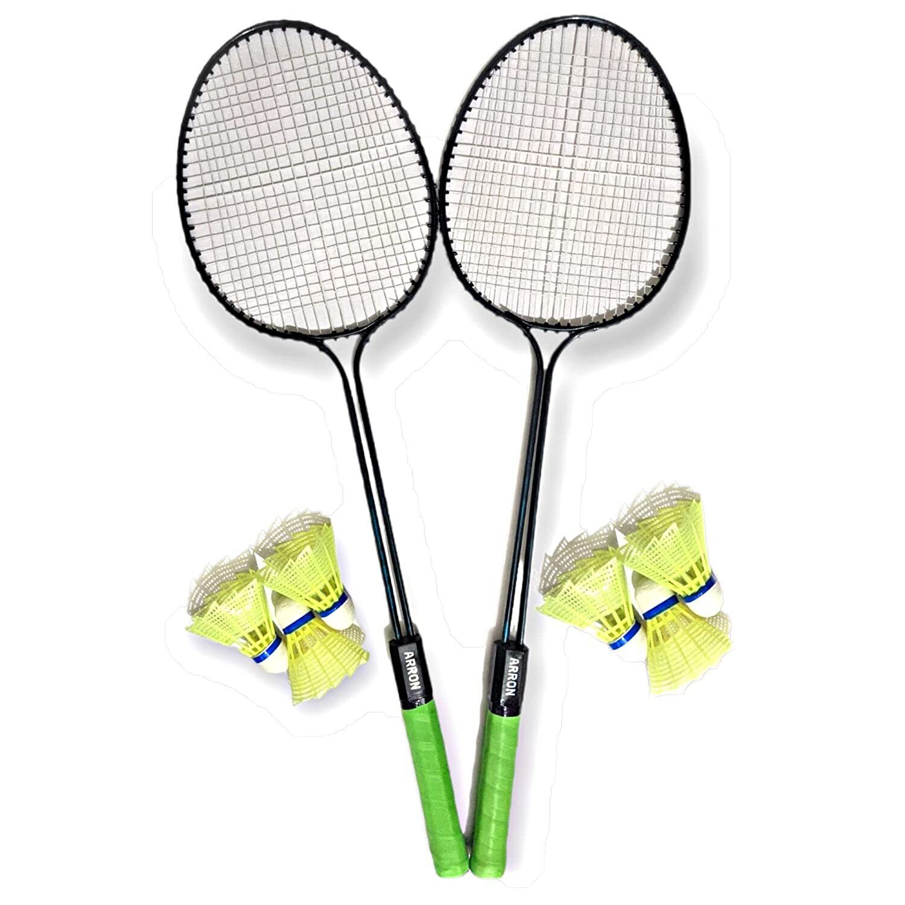
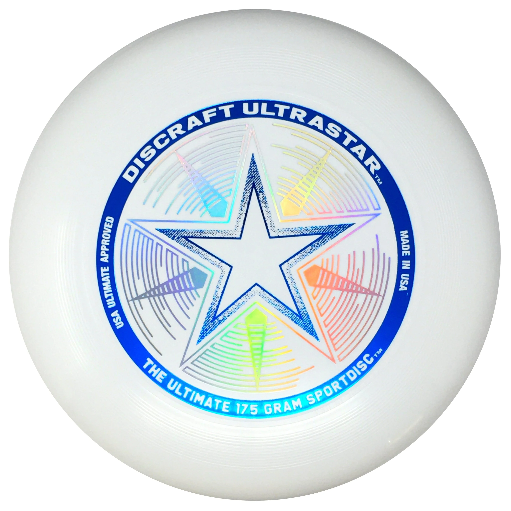
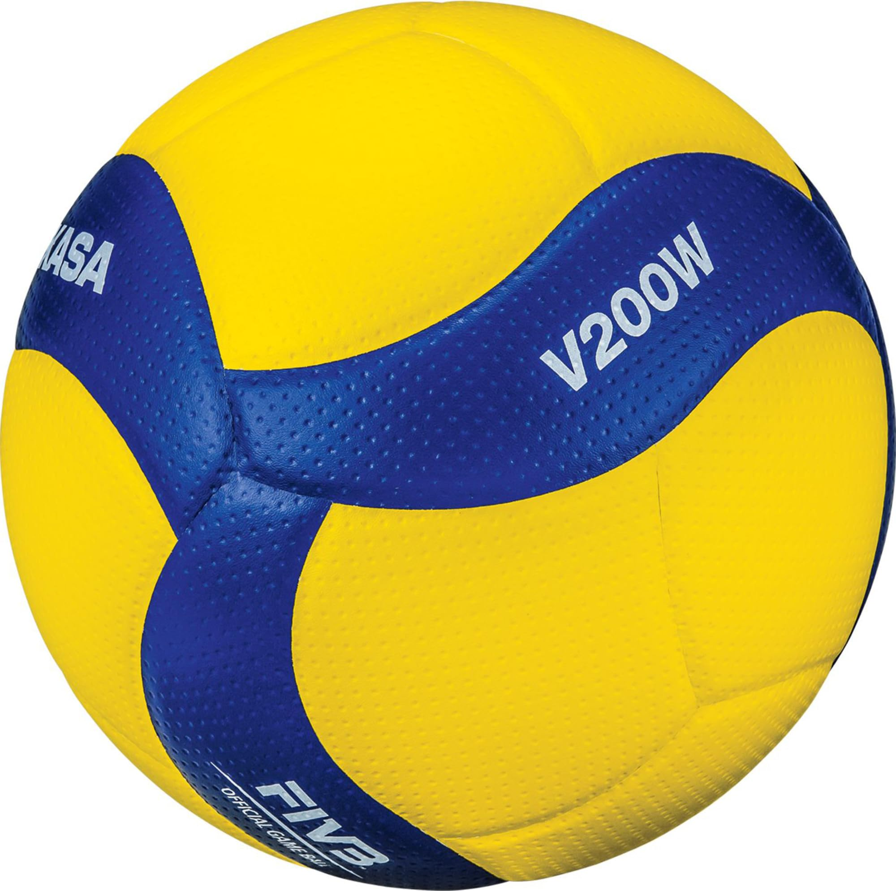
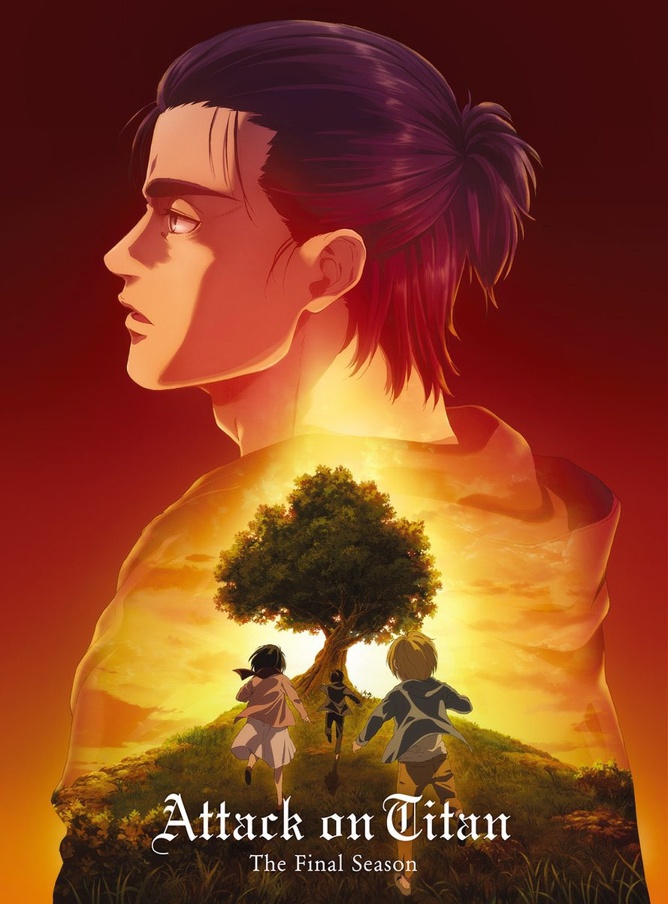
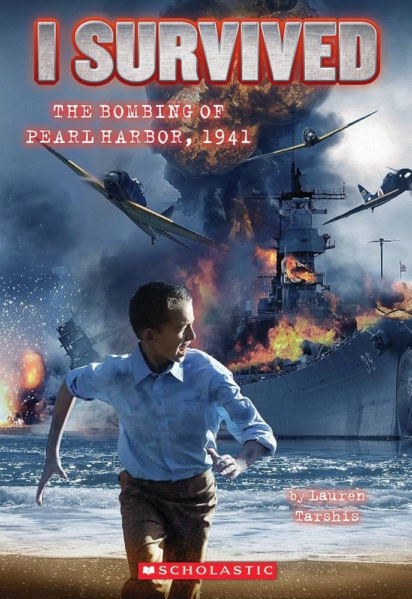

Interests
I’m a creative individual passionate about business, finance, art and computer science. With experience in computer science and finance, I enjoy building things and learning more! I'm also quite athletic and enjoy racquet sports like tennis and badminton!
Favorite Sports
| Sport | Image | Description |
|---|---|---|
| Badminton |  |
I've been playing badminton since I was a kid, and I love the sport! |
| Tennis | I've been playing tennis since I was a kid, even attending an academy, though I don't enjoy it as much anymore due to the other sports I've picked up, I'm still quit fond of it! | |
| Ultimate Frisbee |  |
I started playing ultimate frisbee in middle school, and from the first time I played it, I loved the game! |
| Volleyball |  |
I started playing volleyball in grade 7 a few months before I joined the school team, and I love the sport so far! |
Experience
| Category | Skill | Description | Coding |
|---|---|---|
| Swift | I started self-learning Swift in 2022 and stopped soon after; I only know the basics. | |
| Python | I started learning python from a course on udemy, after that I had fun creating many projects in the language! | |
| Full Stack Web Development | I started self-learning Full Stack Web Development in 2021 and have now created a few cool projects with it! | Volunteering |
| Peer Tutoring | I started peer-turoting in the first semester of grade 10. Peer tutoring has helped me increase my confidence, and better my time managment. I was able to complete my work while teaching my peer. At first, i struggled with teaching but over time i started to learn and became effective at it. | |
| TCS Waterfront Marathon 2024 | I worked at a water station giving out water to runners! | |
| TCS Waterfront Marathon 2025 | I worked at a water station giving out water to runners! | |
| NTCI Web Club | I worked on maintaining the school website. |
Clubs
| Club | Description |
|---|---|
| Investment Club | I joined the Investment club to learn financial literacy and investing. |
| NTCI Web Club | I joined the NTCI Web club to improve my web development skills, The goal of the club is to maintain the school website. |
| Aerospace Club | I joined the Aerospace Club due to my interest in engineering and curiosity and was soon appointed as a Executive member, I have since led many lessons, worked on a model rocket and RC plane. |
| Debate Club | I joined the Debate club to improve my communication skills and build confidence. |
| Leadership Club | I joined the Learder club to improve my communication skills and build confidence. |
| Badminton Club | I joined the Badminton club to have fun and improve at badminton. |
Favorite Pieces Of Media

Attack On Titan
The second anime I ever watched, to this day I believe it's one of the best pieces of media, anime or live action, on the planet.

I Survived Book Series
I have read 3 books out of this series, and they are all wonderful so far!
.jpg)